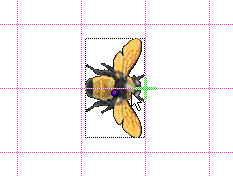
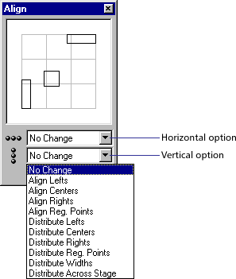

Using Director > Sprites > Positioning sprites > Positioning sprites using guides, the grid, or the Align window
Using Director > Sprites > Positioning sprites > Positioning sprites using guides, the grid, or the Align window |
Positioning sprites using guides, the grid, or the Align window
On the Stage, you can align sprites using guides, the grid, or the Align window.
The grid consists of cell rows and columns of a specified height and width that you use to assist you in visually placing sprites on the Stage. The grid is always available.
Guides are horizontal or vertical lines you can either drag around the Stage or lock in place to assist you with sprite placement. You must create guides before they become available.
Moving a sprite with the Snap To Grid or Snap To Guides feature selected lets you snap the sprite's edges and registration point to the nearest grid or guide line. When you're not using the guides or the grid, you can hide them.
Guides and the grid are visible only during authoring.
You can create and modify the guides and the grid from the Property Inspector, or by using menu commands.
To add and configure guides:
1 |
With the Property Inspector open, click the Guides and Grid tab. |
The top half of the tab contains settings for Guides. |
|
2 |
To change the guide color, click the Guide Color box and select a different color. |
3 |
Select the desired options to make the guides visible, to lock them, and to make the sprites snap to the guides. |
4 |
To add a guide, move the cursor over the new horizontal or vertical guide, then drag the guide to the Stage. Numbers in the guide tooltip indicate the distance, in pixels, the guide is from the top or left edge of the Stage. |
5 |
To reposition a guide, move the pointer over the guide. When the sizing handle appears, drag the guide to its new position. |
6 |
To remove a guide, drag it off the Stage. |
7 |
To remove all guides, click Remove All on the Guides and Grid tab of the Property Inspector. |
To display guides and align sprites:
1 |
If guides are not displayed on the Stage, choose View > Guides and Grid > Show Guides. |
2 |
If Snap To Guides is not selected, choose View > Guides and Grid > Snap To Guides. |
3 |
Move a sprite on the Stage near a guide line to make the sprite snap to that exact location. |
To display a grid and align sprites:
1 |
If grid lines are not displayed on the Stage, choose View > Guides and Grid > Show Grid.
 |
2 |
If Snap To Grid is not selected, choose View > Guides and Grid > Snap To Grid. |
3 |
Move a sprite on the Stage near a grid line to make the sprite snap to that exact location. |
Note: Press G while moving or resizing a sprite to temporarily turn Snap To Grid off or on.
To configure the grid:
1 |
With the Property Inspector open, click the Guides and Grid tab. |
The bottom half of the tab contains Grid settings. |
|
2 |
To change the grid color, click the Grid Color box and select a different color. |
3 |
Select the desired options to make the grid visible and to make the sprites snap to the grid. |
4 |
To change the size of the grid, enter numbers for Width and Height in the Spacing text box. |
To align sprites using the Align window:
1 |
On the Stage or in the Score, select the sprites to align. |
Select entire sprites, keyframes, or frames within sprites in as many different frames or channels as you need. All of the elements will align to the last sprite or frame selected. |
|
2 |
Choose Modify > Align and do one of the following: |
Click an area in the preview window to view and select the way in which the sprites will align. |
|
Choose a vertical and/or horizontal alignment option from the pop-up menus.
 |
|
3 |
Click Align. |
4 |
Close the Align window when you finish aligning selections. |